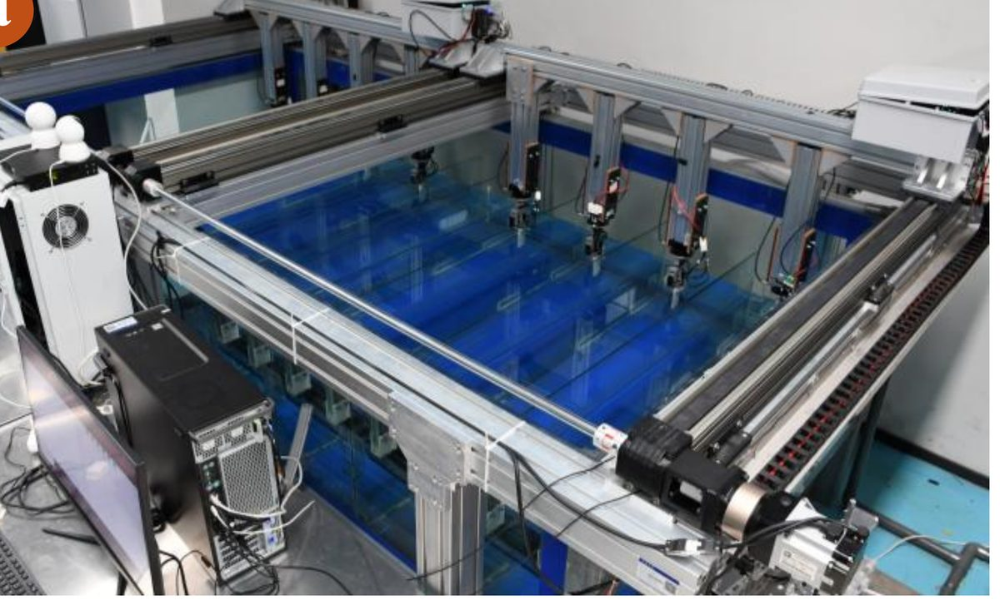
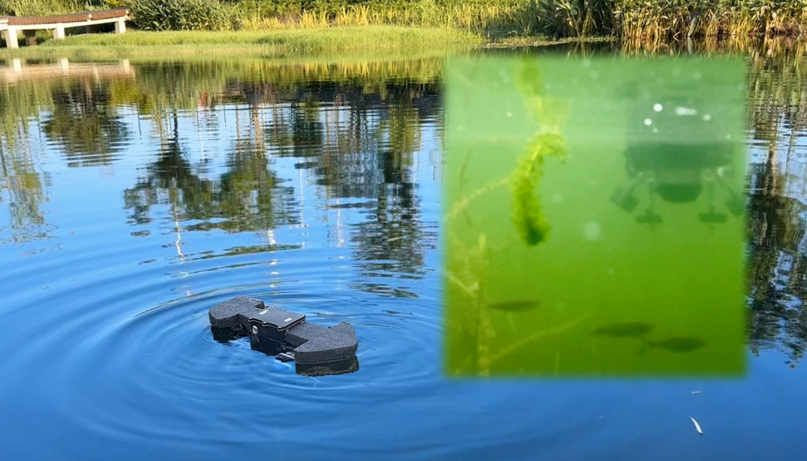
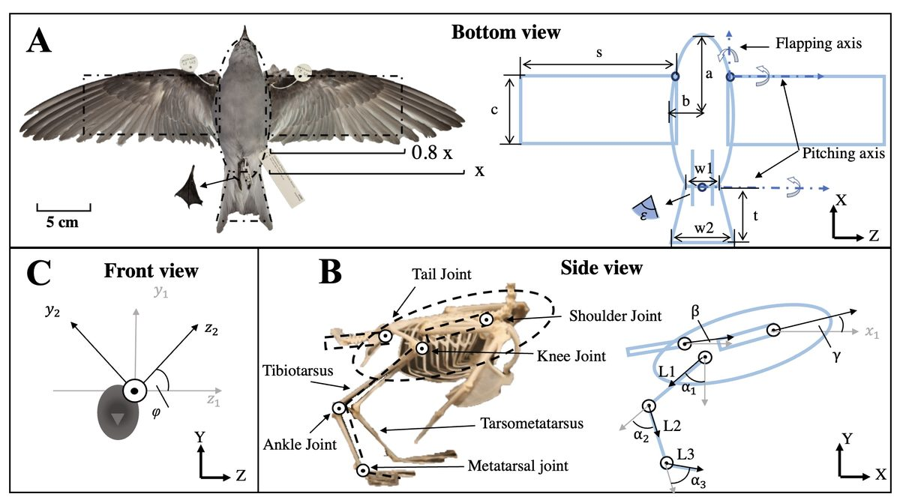
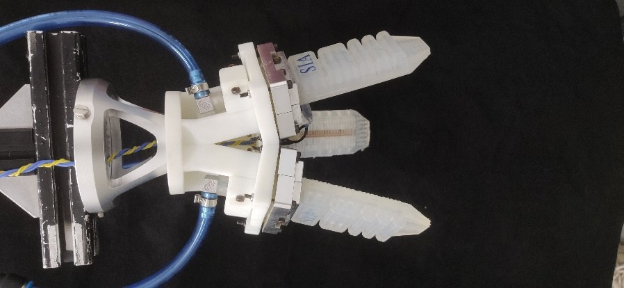
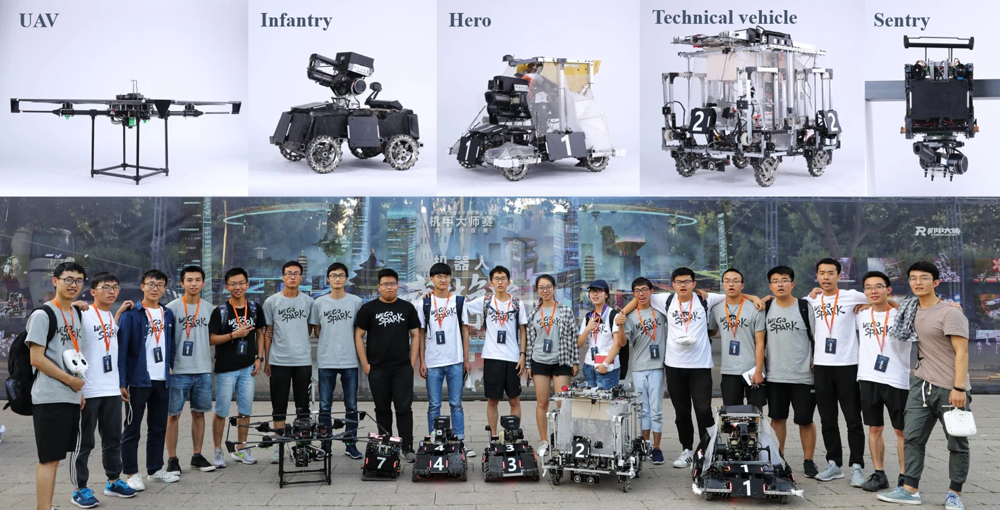
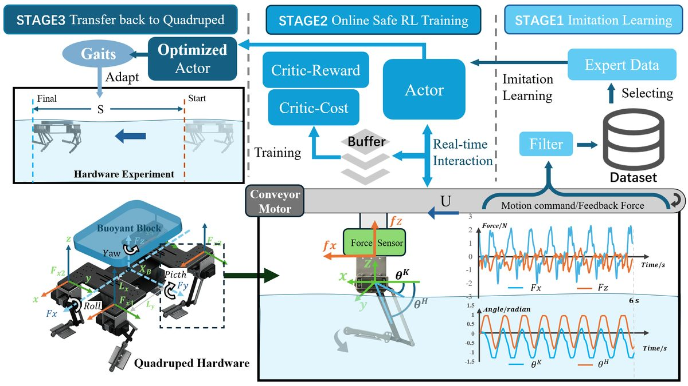
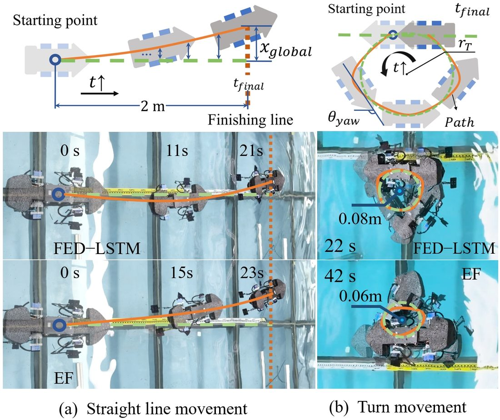
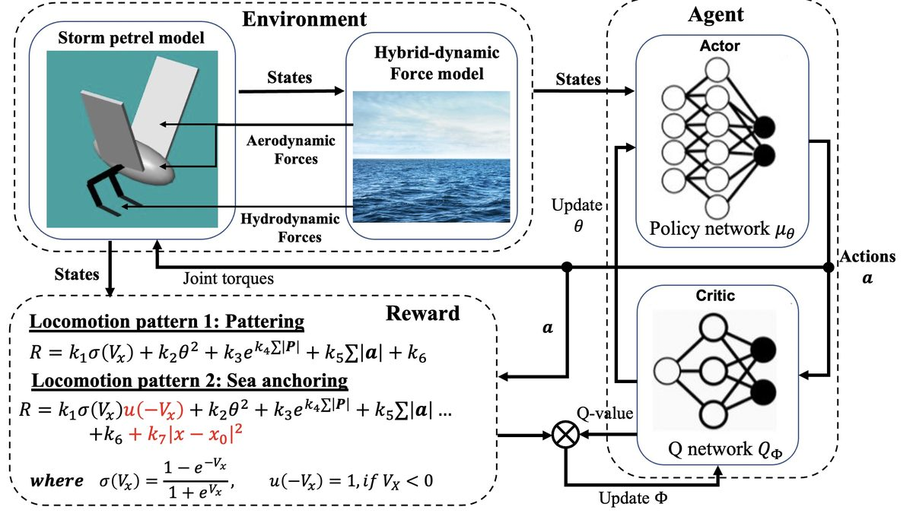
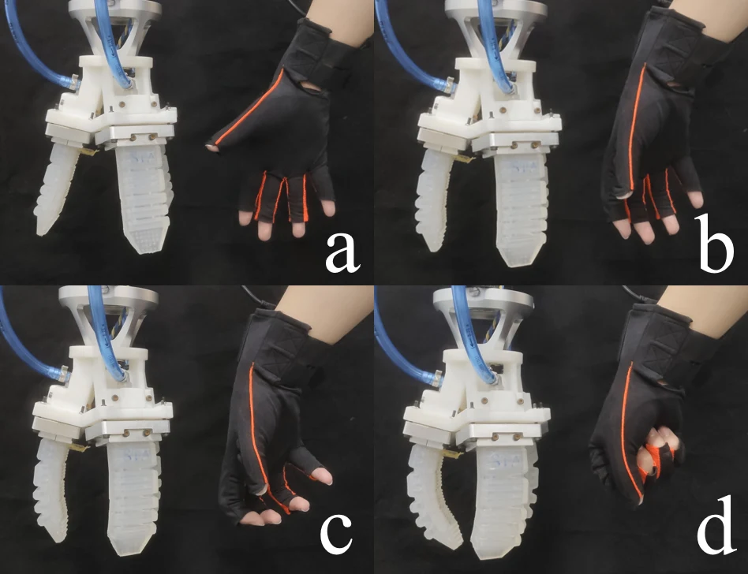
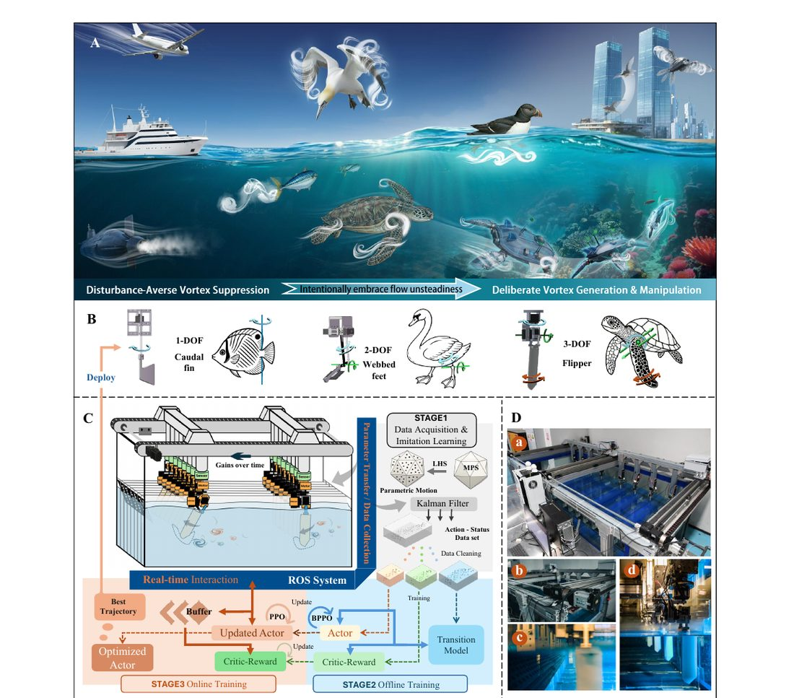

2023.12—至今 · 博士研究
REEF 与真实流体中的学习
参与 REEF 平台与学习控制流程建设，开展同步实验、力反馈数据采集、水动力建模、模仿学习、离线学习及在线适应。相关研究进一步构建 HydroWrench 动态载荷重建数据集与评估基准。
Nature Mechanical Engineering · 在审 / HydroWrench · ICLR 2027 · 在审
机器人 · 学习 · 流体力学
我是西湖大学—浙江大学联合培养的计算机科学与技术专业博士研究生，师从范迪夏教授，在西湖大学 i4FSI 实验室开展仿生推进与机器人学习研究，预计于 2027 年 6 月毕业。
自 2023 年 12 月起，我并行开展 REEF 仿生推进器平台与四足机器人游动研究，贯通受力测量、动力学建模、策略学习和真机验证。此前研究包括深海软体机械手与海燕仿生运动。
2026 年 4 月至 10 月，我在宾夕法尼亚州立大学Baxi Chong 的 LiBR 团队开展多足仿生游动的降阶动力学建模、数值仿真与实验设计。该项目仍在持续推进，与哈佛大学、卡内基梅隆大学（CMU）等机构的学者合作，目前处于论文写作阶段。

REEF · SHOAL · HydroWrench

ICRA 2025 与 2026 实验视频
REEF 在 Nature Mechanical Engineering 在审，稿件已公开于 arXiv。
From Gaits to Routes 在 ICRA 2027 在审；HydroWrench 在 ICLR 2027 在审。
Swimming Under Constraints 获 ICRA 2026 录用，本人为共同第一作者及共同通讯作者。
开始在宾夕法尼亚州立大学进行 4 月至 10 月的访问研究。
Learn to Swim 发表于 ICRA 2025。
海燕学习控制研究发表于 Bioinspiration & Biomimetics。
我的研究连接实验系统、物理模型与学习算法。REEF 平台和四足游动机器人是持续博士研究中并行开展的两条工作线。
2023.12—至今 · 博士研究
参与 REEF 平台与学习控制流程建设，开展同步实验、力反馈数据采集、水动力建模、模仿学习、离线学习及在线适应。相关研究进一步构建 HydroWrench 动态载荷重建数据集与评估基准。
Nature Mechanical Engineering · 在审 / HydroWrench · ICLR 2027 · 在审
2023.12—至今 · 与 REEF 并行研究
承担实验受力数据采集与处理，建立 LSTM 水动力模型并结合多目标优化设计游动步态；研究安全强化学习、四腿相位协调、游动行为规划与技能蒸馏，将单腿实验与整机验证衔接起来。
Learn to Swim · ICRA 2025 / Swimming Under Constraints · ICRA 2026 / From Gaits to Routes · ICRA 2027
北极科考应用 · 2025.08
作为项目参与者，提供被采用的受力测试、建模与运动参数优化架构，并参与特殊足掌设计讨论。
2026.04—至今 · 宾夕法尼亚州立大学访学：2026.04—2026.10
开展多足仿生游动的降阶动力学建模、数值仿真与实验设计。项目仍在进行，与哈佛大学、卡内基梅隆大学（CMU）等机构学者开展合作，目前处于论文写作阶段。

2022.07—2023.10 · 西湖大学
结合空水耦合建模与深度强化学习研究海燕踏水和海锚行为。该项目始于科研助理阶段，并延续至博士入学初期。
Bioinspiration & Biomimetics · 2023 · 共同第一作者

2019.09—2022.06 · 硕士研究
作为软体手方向主要学生参与者，主导结构设计、样机制作、感知与控制开发；与导师讨论技术方案，带领师弟妹开展实现与实验，并参与项目申请的前期调研和材料准备。
国家自然科学基金重大研究计划集成项目 92048302 · 适应极端环境作业的刚-柔-软共融机器人基础研究

2016.09—2019 · 郑州大学
参加 2017、2018、2019 三届比赛，2017—2018 学年担任队长，2019 赛季以顾问身份参与。参与步兵、英雄、工程、无人机及哨兵机器人设计制造，负责 STM32 硬件及 C 语言底盘、云台与发弹控制开发；任队长期间统筹技术规划、分工、进度与系统联调。
嵌入式开发 · 机器人联调 · 团队协作
* 表示共同第一作者 · ✉ 表示通讯作者 · 本人姓名加粗。



已发表 Bioinspiration & Biomimetics · 2023 · 18(6): 066016
结合形态模型、空水耦合受力与深度强化学习，研究海燕的踏水及海锚行为。
已发表 Physics of Fluids · 2023 · 35(10): 101914
采用冲量理论与动态模态分解，分析柔性拍动板的流体受力。
已发表 Physics of Fluids · 2023 · 35(9): 091904
研究水母式间歇推进中的推进表现及涡动力学机制。

已发表 IEEE ROBIO · 2021
研究面向水下抓取的仿生软体抓手设计与操作。

在审 ICRA 2027
在实验校准的水动力仿真环境中，研究四足游动的混合行为规划与技能蒸馏。
在审 ICLR 2027
构建由运动指令重建水下仿生机构动态载荷的数据集与评估基准。
更多信息见 Google Scholar.
展示四足机器人水动力建模、步态优化与安全强化学习的实验工作。
计算机科学与技术 · 导师：范迪夏教授。博士研究所在实验室：西湖大学 i4FSI 实验室。
模式识别与智能系统。培养单位：中国科学院沈阳自动化研究所机器人学国家重点实验室。
测控技术与仪器。
Baxi Chong 的 LiBR 团队。多足仿生游动：降阶建模、数值仿真与实验设计。访学阶段之外，合作项目持续推进。
海燕仿生运动研究、建模、数据分析与论文撰写。
与 Baxi Chong 团队及哈佛大学、卡内基梅隆大学等机构学者持续合作，目前处于论文写作阶段。
REEF 与机械狗游动实验并行推进，论文是持续研究中的阶段成果。
从科研助理阶段延续至博士入学初期。
个人硕士研究阶段，承担设计制作、感知控制及项目申请准备。
2017—2018 学年任队长，2019 赛季任顾问。
每份均为两页，带个人主页、博士实验室和访学团队二维码。可按阅读场景和语言选择。
项目经历、技术贡献与团队组织。
研究工作、论文与学术服务。
RoboMaster：2017 西部赛区三等奖、2018 中部分区赛三等奖。
全国大学生电子设计竞赛：本科组河南赛区二等奖。
郑州大学第三届“创青春”创业大赛：《三维扫描仪》项目特等奖。
在科研之外，通过科普讲解、交流组织、公共服务和文体活动参与校园生活。
作为实验室组织西湖大学参观及学术交流活动的主要组织和讲解人员，接待国内外高校与企业来访人员，介绍学校、实验室研究方向与成果，并围绕仿生机器人、流体力学和智能控制交流。
多次参与工学院面向中小学生的实验室开放与科普活动，承担参观接待、科研平台介绍，以及仿生机器人和流体力学现场讲解。
担任工学院承办的智能流体学术会议志愿者，参与会务组织与现场服务。
以研究生学长身份参与书院交流，分享科研经历、研究过程中的思考和研究生发展路径，帮助本科生了解科研学习。
参与合唱团集体排练及学校演出，在音乐实践中培养艺术素养与团队协作能力。
在科研之外保持规律体育锻炼，喜欢羽毛球、健身、唱歌和摄影。